All managers are called as a method call on a widget, with keyword arguments to specify how the widget (which may itself be a container) will be positioned inside of its container.
Managing the way widgets are laid out within their containers (typically frames, although there are other containers) is referred to as "geometry management." The Tkinter module has three different ways of packing widgets into their containers. You've already seen the pack() method in action. Packing is useful for less complex window layouts, and pack() has many options you can use to control how the components are laid out inside their parent frames.
If components are laid out in a regular grid, you can use a widget's grid() method instead. If you want to place widgets at specific locations, use the widget's place() method. Just make sure you never mix calls on pack(), place(), and grid() methods on the same window. This could throw your program into an infinite loop as it tries to satisfy the needs of the more than one different layout scheme.
The table below shows pack() method's principal keyword arguments. Most of the values are symbols defined by the tkinter module itself:
| Keyword | Values |
|---|---|
| fill | X: fill the container in the horizontal dimension. Y: fill the container in the vertical dimension. BOTH: fill the container in both dimensions. |
| expand | False: the widget is never resized. True: the widget is resized when the container is resized. |
| side | Specifies which side of the container the widget will be packed against (TOP (the default), LEFT, RIGHT, or BOTTOM). |
Let's create a program that demonstrates some of these features. Create a file named sidebyside.py as shown:
from tkinter import * root = Tk() w = Label(root, text="Red Label", bg="red", fg="white") w.pack(side=LEFT) w = Label(root, text="Green Label", bg="green", fg="black") w.pack(side=LEFT) w = Label(root, text="Blue Label", bg="blue", fg="white") w.pack(side=LEFT) mainloop()
When you run the program, you should see a window like this:
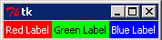
Enlarge the window by dragging a corner of it. The labels remain at the left of the window, and are vertically centered in it, like this:
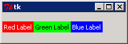
Now, close the window, and change the packing side to TOP as shown:
from tkinter import * root = Tk() w = Label(root, text="Red Label", bg="red", fg="white") w.pack(side=TOP) w = Label(root, text="Green Label", bg="green", fg="black") w.pack(side=TOP) w = Label(root, text="Blue Label", bg="blue", fg="white") w.pack(side=TOP) mainloop()
Now the program's window shows the labels on top of each other, like this:
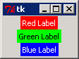
Expand the window; the buttons stick to the top and are centered horizontally, like this:
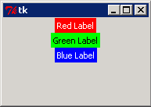
Close the window, and add a fill=BOTH argument to each pack call:
from tkinter import * root = Tk() w = Label(root, text="Red Label", bg="red", fg="white") w.pack(side=TOP, fill=BOTH) w = Label(root, text="Green Label", bg="green", fg="black") w.pack(side=TOP, fill=BOTH) w = Label(root, text="Blue Label", bg="blue", fg="white") w.pack(side=TOP, fill=BOTH) mainloop()
Now the labels fill the frame. But when you expand the window, the labels only expand horizontally. What's up?
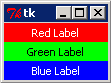
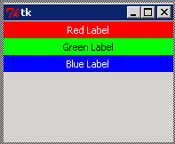
Well, the widgets are not being told to expand, so they only get larger in the dimension where they aren't stacked. So the final change we'll make will be to add an expand option to the pack() calls (just for fun, we'll omit one to see what happens). Close the window and modify sidebyside.py as shown:
from tkinter import * root = Tk() w = Label(root, text="Red Label", bg="red", fg="white") w.pack(side=TOP, fill=BOTH) w = Label(root, text="Green Label", bg="green", fg="black") w.pack(side=TOP, fill=BOTH, expand=True) w = Label(root, text="Blue Label", bg="blue", fg="white") w.pack(side=TOP, fill=BOTH, expand=True) mainloop()
When you resize the window, the green and blue labels expand to continue to fill the frame while the red label (which does not have expand=True) remains at its original height.
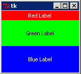
The grid manager is, as its name suggests, most useful when you want components to be laid out on a regular grid. It's probably the most flexible of the managers, and unlike the pack manager, the grid manager does not require you to create a large number of frames to make sure that all of your widgets line up properly as the window is resized.
Once you have created a widget, you can place it in its container in a notional grid, where rows and columns are sized automatically to accommodate the widgets each cell contains, by calling the widget's grid() method. An empty row or column will never be displayed or take up any space within the window, which gives you some flexibility about row and column numbering. The table below explains the possible arguments:
| Keyword | Values |
|---|---|
| row | Specifies the row in which this widget should appear. |
| column | Specifies the column in which this widget should appear. |
| sticky | Normally a widget appears centered within its cell. The sticky attribute can be set to one of four special values, N, S, E, or W, to specify with which side of the cell the widget should be aligned. You can add these values together to cause the widget to expand into its cell. For example, E+W would make expand to occupy the full width of its cell, while N+S+E+W would cause the widget to spread out to fill the whole cell. |
| rowspan, columnspan | If you want a widget to occupy more than one row and/or column, set rowspan and/or columnspan to the number of rows and/or columns you want it to occupy. The row and column number associated with the widget identify the top-left corner of the spanned block. |
Let's play with the grid manager. Create a program named tkgrid.py as shown:
from tkinter import *
def colorgen():
while True:
yield "red"
yield "blue"
class Application(Frame):
def __init__(self, master=None):
colors = colorgen()
Frame.__init__(self, master)
self.grid()
for r in (1, 22, 333):
for c in (1, 22, 333):
txt = "Item {0}, {1}".format(r, c)
l = Label(self, text=txt, bg=next(colors))
l.grid(row=r, column=c)
root = Tk()
app = Application(master=root)
app.mainloop()
Run the program. It makes the frame rows and columns just big enough for the tallest and widest widgets they contain. Because we chose row and column numbers with different widths, some of the cells have space around them, and you can see the white background of the frame.
Resizing the window demonstrates that only the frame resizes. The cells stay at the top-left corner within the frame.
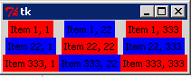
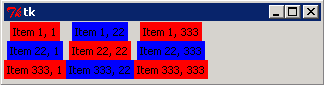
from tkinter import * def colorgen(): while True: yield "red" yield "blue" class Application(Frame): def __init__(self, master=None): colors = colorgen() Frame.__init__(self, master) self.grid() for r in (1, 22, 333): for c in (1, 22, 333): txt = "Item {0}, {1}".format(r, c) l = Label(self, text=txt, bg=next(colors)) l.grid(row=r, column=c) root = Tk() app = Application(master=root) app.mainloop()
We used an infinite generator to create as many alternating colors as the application requires. Calling the next() function on a generator is the most convenient way to retrieve the next value in the sequence when you can't iterate over it.
The nested for loops create a two-dimensional array where r is the row and c is the column; the array provides the numbers to display in each grid position AND the display positions themselves (we used multiple-digit numbers to make the text wider for some cells than others; we'd get the same positioning with (1,2,3)).
Close the window. The white space issue can be addressed by making the cells sticky on the East and West sides:
from tkinter import *
def colorgen():
while True:
yield "red"
yield "blue"
class Application(Frame):
def __init__(self, master=None):
colors = colorgen()
Frame.__init__(self, master)
self.grid()
for r in (1, 22, 333):
for c in (1, 22, 333):
txt = "Item {0}, {1}".format(r, c)
l = Label(self, text=txt, bg=next(colors))
l.grid(row=r, column=c, sticky=E+W)
root = Tk()
app = Application(master=root)
app.mainloop()
Save and run it. This fixes the white space problem by making all cells in each column the same width. When the window is expanded, however, the rows and columns remain at the top-left of the frame and unchanged in size.
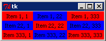
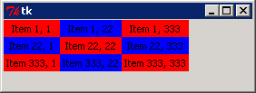
In order to have the columns and rows expand to fill the frame, we actually need to reconfigure the frame itself. A frame with widgets that are configured using the grid manager has rowconfigure() and columnconfigure() methods, which you can call to apply specific configurations. The first argument is always the row or column index; this can be followed by a number of keyword arguments:
| Keyword | Meaning |
|---|---|
| minsize | Defines the row's or column's minimum size. (Note that the row or column still will not be displayed if there are no widgets present within it.) |
| pad | Sets the size of the row or column by adding the specified amount of padding to the height of the row or the width of the column. |
| weight | Determines how additional space is distributed between the rows and columns as the frame expands. The higher the weight, the more of the additional space is distributed between the rows or columns. A row with weight 2 will expand twice as fast as a row with weight 1; it works the same way for columns. |
So by calling rowconfigure() and columnconfigure() methods on the frame, we can fix the second problem. Close the window and modify tkgrid.py as shown:
from tkinter import *
def colorgen():
while True:
yield "red"
yield "blue"
class Application(Frame):
def __init__(self, master=None):
colors = colorgen()
Frame.__init__(self, master)
self.master.rowconfigure(0, weight=1)
self.master.columnconfigure(0, weight=1)
self.grid(sticky=W+E+N+S)
rcount = 0
for r in (1, 22, 333):
self.rowconfigure(r, weight=rcount)
rcount += 1
ccount = 0
for c in (1, 22, 333):
self.columnconfigure(c, weight=ccount)
ccount += 1
txt = "Item {0}, {1}".format(r, c)
l = Label(self, text=txt, bg=next(colors))
l.grid(row=r, column=c, sticky=W+E+N+S)
root = Tk()
app = Application(master=root)
app.mainloop()
Save and run it. The master frame is configured to expand as the program window (a grid of one row and one column) expands. Each row and column is given a weight one higher than the preceding one, starting with zero. This means that as the window expands, the top left cell always stays the same size, and the third row and column expand more than the second.
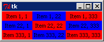
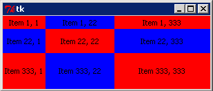
Close the window.
Finally, we're going to see how the rowspan and columnspan keyword arguments allow us to build flexible layouts. In this case, we'll have a column of buttons on the left, a row of buttons along the bottom, and a frame occupying the remainder of the window. Create grdspan.py as shown:
from tkinter import *
ALL = N+S+W+E
class Application(Frame):
def __init__(self, master=None):
Frame.__init__(self, master)
self.master.rowconfigure(0, weight=1)
self.master.columnconfigure(0, weight=1)
self.grid(sticky=ALL)
for r in range(5):
self.rowconfigure(r, weight=1)
Button(self, text="Row {0}".format(r)).grid(row=r, column=0, sticky=ALL)
self.rowconfigure(5, weight=1)
for c in range(5):
self.columnconfigure(c, weight=1)
Button(self, text="Col {0}".format(c)).grid(row=5, column=c, sticky=ALL)
f = Frame(self, bg="red")
f.grid(row=0, column=1, rowspan=5, columnspan=4, sticky=ALL)
root = Tk()
app = Application(master=root)
app.mainloop()
This application again starts out by configuring the frame as a single-row, single-column, expanding grid. Then it configures five buttons in column zero, and adds a sixth row (numbered 5—remember the numbering starts from zero here) containing five buttons. The window has six rows and five columns.
The remainder of the window is occupied by a red Frame; its top-left corner is next to the top button. So it has to span five rows and four columns. When you run your program, the frame should occupy the whole window, even after the program window is resized. Because the buttons are sticky on all four edges, they expand to fill the space the grid manager allocates to them.
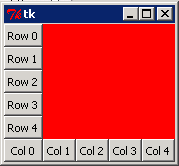
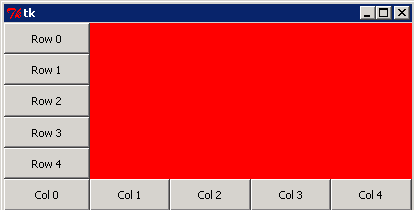
We mention this manager only because you might encounter code that uses it. Frankly, the available documentation is insufficient to explain how it works, but you can place a widget either "relatively" (by specifying a relx and rely argument between 0 and 1 that says how far along the container's width and height the widget should be placed) or "absolutely", specifying an x and a y position in absolute screen coordinates.
While the place manager allows most flexibility, it is also the most difficult to use, and is outside the scope of this course.
So now you can achieve a required window layout, using either the pack or the grid geometry managers. Excellent! In the next lesson, we'll focus on event handling, and introduce you to a number of tkinter's built-in dialogs. See you there...